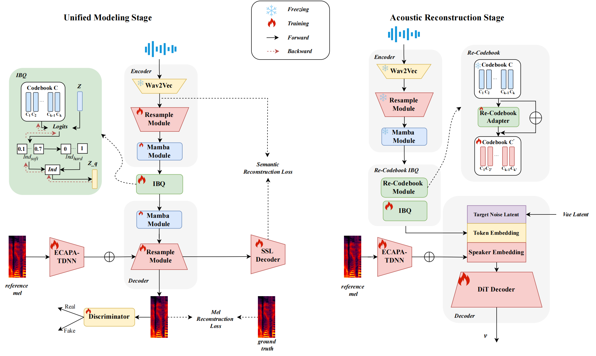

<!DOCTYPE html>
<html lang="en-US">

<head>
  <meta http-equiv="Content-Type" content="text/html; charset=UTF-8">


  <title>Single-Codec2</title>
  <meta name="generator" content="Jekyll v3.9.0">
  <meta property="og:title" content="Single-Codec">
  <meta property="og:locale" content="en_US">

  <meta name="twitter:card" content="summary">


  <meta name="viewport" content="width=device-width, initial-scale=1">
  <meta name="theme-color" content="#157878">
  <link rel="stylesheet" href="style.css">
</head>

<body data-new-gr-c-s-check-loaded="14.1001.0" data-gr-ext-installed="">
  <section class="page-header">


  </section>

  <section class="main-content">
    <h1 id="">
    <center>Single-Codec2:Re-CodeBook enhanced Single-Codebook Speech Codec for Low-Rate and High-Quality Speech Generation</center>
    </h1>

    <center> Jingbin Hu<sup>1</sup>, Liumeng Xue<sup>2</sup>, Wenhao Li<sup>1</sup>, Hanzhao Li<sup>1</sup>, Ziyu Zhang<sup>1</sup>, Kangxiang Xia<sup>1</sup> </center>
    <center>  Dake Guo<sup>1</sup>, Lei Xie<sup>1</sup>, Qiang Zhang<sup>3</sup>, Haoyue Zhan<sup>3</sup>, Pengyuan Xie<sup>3</sup> </center>

    <p></p>
      
    <center> <sup>1</sup>Audio, Speech and Language Processing Group (ASLP@NPU), School of Computer Science, Northwestern Polytechnical University, Xi'an, China<br /></center>
    <center> <sup>2</sup>Hong Kong University of Science and Technology, Hong Kong SAR, China</center>
    <center> <sup>3</sup>Guangzhou Quwan Network Technology, Guangzhou, China</center>

    <h2>0. Contents</h2>
    <ol>
      <li><a href="#abstract">Abstract</a></li>
      <li><a href="#Ablation">Samples on Audio Reconstruction: Ablation Study </a></li>
      <li><a href="#Reconstruction">Samples on Audio Reconstruction: Comparison Study </a></li>
      <li><a href="#TTS">Audio Samples: Zero-shot TTS based on differenct codecs </a></li>
    </ol>

    <br><br>
    <h2 id="abstract">1. Abstract<a name="abstract"></a></h2>
    <p> Recent advances in large language model (LLM)-based text-to-speech (TTS) systems leverage speech tokenization to discretize continuous speech, enabling LLM paradigms for speech modeling.Ideal tokens require low frame rates and semantic richness, yet compressing rich acoustic information such as phonetics, prosody, and speaker characteristics into low-frame-rate tokens remains challenging. Current single-codebook codecs use speaker timbre decoupling or semantic distillation but suffer from poor acoustic-semantic balance and reconstruction quality. Quantization issues like codebook collapse and high quantization loss further hinder performance. To address these challenges, we propose Single-Codec 2, a two-stage single-codebook codec. In the unified modeling stage, we introduce Index Backpropagation Quantization (IBQ) to reduce quantization loss and implement a dual-decoder architecture to learn a unified codebook. In the acoustic reconstruction stage, we map this unified codebook to an acoustic codebook via a novel re-codebook module, balancing semantic modeling and high-fidelity reconstruction. Moreover, a DiT-based decoder further enhances performance.Experiments demonstrate that Single-Codec 2 achieves superior performances in both speech reconstruction and TTS tasks even in 12.5 Hz frame rate and 162.5 bps bandwidth.
    </p>

    <!-- <br><br> -->

    <center></center>
    <div align="center"><b>Fig.1</b> The architecture of Single-Codec2.</div>

    <!-- <br><br> -->

    <h2 id="Ablation">2. Samples on Audio Reconstruction: Ablation Study <a name="Ablation"></a></h2>
      <table>
        <tr>
          <th>GT</th><th>Single-Codec2 25Hz</th><th>Single-Codec2 12.5Hz</th><th>wo. Re-codebook</th><th>w. VQ</th><th>w. FSQ</th><th>w. BLSTM</th></tr>
        <tr>
          <td><audio controls><source src="demos/codec2_GT/celeb_zh_yuchengdong.wav" type="audio/wav"></audio></td><td><audio controls><source src="demos/codec2_25hz/celeb_zh_yuchengdong.wav" type="audio/wav"></audio></td><td><audio controls><source src="demos/codec2_12_5hz/celeb_zh_yuchengdong.wav" type="audio/wav"></audio></td><td><audio controls><source src="demos/codec2_recodebook/celeb_zh_yuchengdong.wav" type="audio/wav"></audio></td><td><audio controls><source src="demos/codec2_vq/celeb_zh_yuchengdong.wav" type="audio/wav"></audio></td><td><audio controls><source src="demos/codec2_fsq/celeb_zh_yuchengdong.wav" type="audio/wav"></audio></td><td><audio controls><source src="demos/codec2_blstm/celeb_zh_yuchengdong.wav" type="audio/wav"></audio></td></tr>
          <tr>
          <td><audio controls><source src="demos/codec2_GT/celeb_zh_luoyonghao_2.wav" type="audio/wav"></audio></td><td><audio controls><source src="demos/codec2_25hz/celeb_zh_luoyonghao_2.wav" type="audio/wav"></audio></td><td><audio controls><source src="demos/codec2_12_5hz/celeb_zh_luoyonghao_2.wav" type="audio/wav"></audio></td><td><audio controls><source src="demos/codec2_recodebook/celeb_zh_luoyonghao_2.wav" type="audio/wav"></audio></td><td><audio controls><source src="demos/codec2_vq/celeb_zh_luoyonghao_2.wav" type="audio/wav"></audio></td><td><audio controls><source src="demos/codec2_fsq/celeb_zh_luoyonghao_2.wav" type="audio/wav"></audio></td><td><audio controls><source src="demos/codec2_blstm/celeb_zh_luoyonghao_2.wav" type="audio/wav"></audio></td></tr>
          <tr>
          <td><audio controls><source src="demos/codec2_GT/celeb_en_jobs_2.wav" type="audio/wav"></audio></td><td><audio controls><source src="demos/codec2_25hz/celeb_en_jobs_2.wav" type="audio/wav"></audio></td><td><audio controls><source src="demos/codec2_12_5hz/celeb_en_jobs_2.wav" type="audio/wav"></audio></td><td><audio controls><source src="demos/codec2_recodebook/celeb_en_jobs_2.wav" type="audio/wav"></audio></td><td><audio controls><source src="demos/codec2_vq/celeb_en_jobs_2.wav" type="audio/wav"></audio></td><td><audio controls><source src="demos/codec2_fsq/celeb_en_jobs_2.wav" type="audio/wav"></audio></td><td><audio controls><source src="demos/codec2_blstm/celeb_en_jobs_2.wav" type="audio/wav"></audio></td></tr>
          <tr>
          <td><audio controls><source src="demos/codec2_GT/acg_zh_houyi.wav" type="audio/wav"></audio></td><td><audio controls><source src="demos/codec2_25hz/acg_zh_houyi.wav" type="audio/wav"></audio></td><td><audio controls><source src="demos/codec2_12_5hz/acg_zh_houyi.wav" type="audio/wav"></audio></td><td><audio controls><source src="demos/codec2_recodebook/acg_zh_houyi.wav" type="audio/wav"></audio></td><td><audio controls><source src="demos/codec2_vq/acg_zh_houyi.wav" type="audio/wav"></audio></td><td><audio controls><source src="demos/codec2_fsq/acg_zh_houyi.wav" type="audio/wav"></audio></td><td><audio controls><source src="demos/codec2_blstm/acg_zh_houyi.wav" type="audio/wav"></audio></td></tr>
          <tr>
          <td><audio controls><source src="demos/codec2_GT/dialet_sh_male.wav" type="audio/wav"></audio></td><td><audio controls><source src="demos/codec2_25hz/dialet_sh_male.wav" type="audio/wav"></audio></td><td><audio controls><source src="demos/codec2_12_5hz/dialet_sh_male.wav" type="audio/wav"></audio></td><td><audio controls><source src="demos/codec2_recodebook/dialet_sh_male.wav" type="audio/wav"></audio></td><td><audio controls><source src="demos/codec2_vq/dialet_sh_male.wav" type="audio/wav"></audio></td><td><audio controls><source src="demos/codec2_fsq/dialet_sh_male.wav" type="audio/wav"></audio></td><td><audio controls><source src="demos/codec2_blstm/dialet_sh_male.wav" type="audio/wav"></audio></td></tr>
          <tr>
          <td><audio controls><source src="demos/codec2_GT/en_child_1.wav" type="audio/wav"></audio></td><td><audio controls><source src="demos/codec2_25hz/en_child_1.wav" type="audio/wav"></audio></td><td><audio controls><source src="demos/codec2_12_5hz/en_child_1.wav" type="audio/wav"></audio></td><td><audio controls><source src="demos/codec2_recodebook/en_child_1.wav" type="audio/wav"></audio></td><td><audio controls><source src="demos/codec2_vq/en_child_1.wav" type="audio/wav"></audio></td><td><audio controls><source src="demos/codec2_fsq/en_child_1.wav" type="audio/wav"></audio></td><td><audio controls><source src="demos/codec2_blstm/en_child_1.wav" type="audio/wav"></audio></td></tr>
        <tr>
      </table>
        
    <h2 id="Reconstruction">3. Samples on Audio Reconstruction: Comparison Study <a name="Reconstruction"></a></h2>
      <table>
        <tr>
        <th>GT</th><th>Single-Codec2 25Hz</th><th>Single-Codec2 12.5Hz</th><th>FocalCodec</th><th>DAC(RVQ)</th><th>Single-Codec</th><th>TadiCodec w. text</th></tr>
        <tr>
        <td><audio controls><source src="demos/codec2_GT/celeb_zh_yuchengdong.wav" type="audio/wav"></audio></td><td><audio controls><source src="demos/codec2_25hz/celeb_zh_yuchengdong.wav" type="audio/wav"></audio></td><td><audio controls><source src="demos/codec2_12_5hz/celeb_zh_yuchengdong.wav" type="audio/wav"></audio></td><td><audio controls><source src="demos/codec2_focalcodec/celeb_zh_yuchengdong.wav" type="audio/wav"></audio></td><td><audio controls><source src="demos/codec2_vq/celeb_zh_yuchengdong.wav" type="audio/wav"></audio></td><td><audio controls><source src="demos/codec2_singlecodec/celeb_zh_yuchengdong.wav" type="audio/wav"></audio></td><td><audio controls><source src="demos/codec2_taidicodec/celeb_zh_yuchengdong.wav" type="audio/wav"></audio></td></tr>
        <tr>
        <td><audio controls><source src="demos/codec2_GT/celeb_zh_luoyonghao_2.wav" type="audio/wav"></audio></td><td><audio controls><source src="demos/codec2_25hz/celeb_zh_luoyonghao_2.wav" type="audio/wav"></audio></td><td><audio controls><source src="demos/codec2_12_5hz/celeb_zh_luoyonghao_2.wav" type="audio/wav"></audio></td><td><audio controls><source src="demos/codec2_focalcodec/celeb_zh_luoyonghao_2.wav" type="audio/wav"></audio></td><td><audio controls><source src="demos/codec2_vq/celeb_zh_luoyonghao_2.wav" type="audio/wav"></audio></td><td><audio controls><source src="demos/codec2_singlecodec/celeb_zh_luoyonghao_2.wav" type="audio/wav"></audio></td><td><audio controls><source src="demos/codec2_taidicodec/celeb_zh_luoyonghao_2.wav" type="audio/wav"></audio></td></tr>
        <tr>
        <td><audio controls><source src="demos/codec2_GT/celeb_en_jobs_2.wav" type="audio/wav"></audio></td><td><audio controls><source src="demos/codec2_25hz/celeb_en_jobs_2.wav" type="audio/wav"></audio></td><td><audio controls><source src="demos/codec2_12_5hz/celeb_en_jobs_2.wav" type="audio/wav"></audio></td><td><audio controls><source src="demos/codec2_focalcodec/celeb_en_jobs_2.wav" type="audio/wav"></audio></td><td><audio controls><source src="demos/codec2_vq/celeb_en_jobs_2.wav" type="audio/wav"></audio></td><td><audio controls><source src="demos/codec2_singlecodec/celeb_en_jobs_2.wav" type="audio/wav"></audio></td><td><audio controls><source src="demos/codec2_taidicodec/celeb_en_jobs_2.wav" type="audio/wav"></audio></td></tr>
        <tr>
        <td><audio controls><source src="demos/codec2_GT/acg_zh_houyi.wav" type="audio/wav"></audio></td><td><audio controls><source src="demos/codec2_25hz/acg_zh_houyi.wav" type="audio/wav"></audio></td><td><audio controls><source src="demos/codec2_12_5hz/acg_zh_houyi.wav" type="audio/wav"></audio></td><td><audio controls><source src="demos/codec2_focalcodec/acg_zh_houyi.wav" type="audio/wav"></audio></td><td><audio controls><source src="demos/codec2_vq/acg_zh_houyi.wav" type="audio/wav"></audio></td><td><audio controls><source src="demos/codec2_singlecodec/acg_zh_houyi.wav" type="audio/wav"></audio></td><td><audio controls><source src="demos/codec2_taidicodec/acg_zh_houyi.wav" type="audio/wav"></audio></td></tr>
        <tr>
        <td><audio controls><source src="demos/codec2_GT/dialet_sh_male.wav" type="audio/wav"></audio></td><td><audio controls><source src="demos/codec2_25hz/dialet_sh_male.wav" type="audio/wav"></audio></td><td><audio controls><source src="demos/codec2_12_5hz/dialet_sh_male.wav" type="audio/wav"></audio></td><td><audio controls><source src="demos/codec2_focalcodec/dialet_sh_male.wav" type="audio/wav"></audio></td><td><audio controls><source src="demos/codec2_vq/dialet_sh_male.wav" type="audio/wav"></audio></td><td><audio controls><source src="demos/codec2_singlecodec/dialet_sh_male.wav" type="audio/wav"></audio></td><td><audio controls><source src="demos/codec2_taidicodec/dialet_sh_male.wav" type="audio/wav"></audio></td></tr>
        <tr>
        <td><audio controls><source src="demos/codec2_GT/en_child_1.wav" type="audio/wav"></audio></td><td><audio controls><source src="demos/codec2_25hz/en_child_1.wav" type="audio/wav"></audio></td><td><audio controls><source src="demos/codec2_12_5hz/en_child_1.wav" type="audio/wav"></audio></td><td><audio controls><source src="demos/codec2_focalcodec/en_child_1.wav" type="audio/wav"></audio></td><td><audio controls><source src="demos/codec2_vq/en_child_1.wav" type="audio/wav"></audio></td><td><audio controls><source src="demos/codec2_singlecodec/en_child_1.wav" type="audio/wav"></audio></td><td><audio controls><source src="demos/codec2_taidicodec/en_child_1.wav" type="audio/wav"></audio></td></tr>
        <tr>
      </table>

      
        

      <h2 id="TTS">4. Audio Samples:Zero-shot TTS based on different codecs <a name="TTS"></a></h2>

      <table>
        <tr>
        <th>Prompt Audio</th><th>VQVAE</th><th>EnCodec-1VQ</th><th>EnCodec-4VQ</th><th>EnCodec-8VQ</th><th>TiCodec-1VQ</th><th>Single-Codec</th></tr>
        <tr>
        <td rowspan="12" style="text-align: center;"><p>Chinese speaker</p><audio controls><source src="demos/tts_prompt/BAC009S0143W0256.wav" type="audio/wav"></audio></td><tr><td colspan="6">That was before the day of high-school athletics.</td></tr><td><audio controls><source src="demos/tts_VQVAE/BAC009S0143W0256-libritts_2004-147981_000003_000000.wav" type="audio/wav"></audio></td><td><audio controls><source src="demos/tts_EnCodec-1VQ/BAC009S0143W0256-libritts_2004-147981_000003_000000.wav" type="audio/wav"></audio></td><td><audio controls><source src="demos/tts_EnCodec-4VQ/BAC009S0143W0256-libritts_2004-147981_000003_000000.wav" type="audio/wav"></audio></td><td><audio controls><source src="demos/tts_EnCodec-8VQ/BAC009S0143W0256-libritts_2004-147981_000003_000000.wav" type="audio/wav"></audio></td><td><audio controls><source src="demos/tts_TiCodec-1VQ/BAC009S0143W0256-libritts_2004-147981_000003_000000.wav" type="audio/wav"></audio></td><td><audio controls><source src="demos/tts_Single-Codec/BAC009S0143W0256-libritts_2004-147981_000003_000000.wav" type="audio/wav"></audio></td></tr>
        <tr>
        <tr><td colspan="6">He had found your humble servant, then about six months old.</td></tr><td><audio controls><source src="demos/tts_VQVAE/BAC009S0143W0256-libritts_5979-42002_000006_000008.wav" type="audio/wav"></audio></td><td><audio controls><source src="demos/tts_EnCodec-1VQ/BAC009S0143W0256-libritts_5979-42002_000006_000008.wav" type="audio/wav"></audio></td><td><audio controls><source src="demos/tts_EnCodec-4VQ/BAC009S0143W0256-libritts_5979-42002_000006_000008.wav" type="audio/wav"></audio></td><td><audio controls><source src="demos/tts_EnCodec-8VQ/BAC009S0143W0256-libritts_5979-42002_000006_000008.wav" type="audio/wav"></audio></td><td><audio controls><source src="demos/tts_TiCodec-1VQ/BAC009S0143W0256-libritts_5979-42002_000006_000008.wav" type="audio/wav"></audio></td><td><audio controls><source src="demos/tts_Single-Codec/BAC009S0143W0256-libritts_5979-42002_000006_000008.wav" type="audio/wav"></audio></td></tr>
        <tr>
        <tr><td colspan="6">Some, wounded or killed, fell back into the rooms, uttering piercing cries.</td></tr><td><audio controls><source src="demos/tts_VQVAE/BAC009S0143W0256-libritts_6153-62535_000065_000004.wav" type="audio/wav"></audio></td><td><audio controls><source src="demos/tts_EnCodec-1VQ/BAC009S0143W0256-libritts_6153-62535_000065_000004.wav" type="audio/wav"></audio></td><td><audio controls><source src="demos/tts_EnCodec-4VQ/BAC009S0143W0256-libritts_6153-62535_000065_000004.wav" type="audio/wav"></audio></td><td><audio controls><source src="demos/tts_EnCodec-8VQ/BAC009S0143W0256-libritts_6153-62535_000065_000004.wav" type="audio/wav"></audio></td><td><audio controls><source src="demos/tts_TiCodec-1VQ/BAC009S0143W0256-libritts_6153-62535_000065_000004.wav" type="audio/wav"></audio></td><td><audio controls><source src="demos/tts_Single-Codec/BAC009S0143W0256-libritts_6153-62535_000065_000004.wav" type="audio/wav"></audio></td></tr>
        <tr>
        <tr><td colspan="6">She will do for me.</td></tr><td><audio controls><source src="demos/tts_VQVAE/BAC009S0143W0256-p263_160_mic1.wav" type="audio/wav"></audio></td><td><audio controls><source src="demos/tts_EnCodec-1VQ/BAC009S0143W0256-p263_160_mic1.wav" type="audio/wav"></audio></td><td><audio controls><source src="demos/tts_EnCodec-4VQ/BAC009S0143W0256-p263_160_mic1.wav" type="audio/wav"></audio></td><td><audio controls><source src="demos/tts_EnCodec-8VQ/BAC009S0143W0256-p263_160_mic1.wav" type="audio/wav"></audio></td><td><audio controls><source src="demos/tts_TiCodec-1VQ/BAC009S0143W0256-p263_160_mic1.wav" type="audio/wav"></audio></td><td><audio controls><source src="demos/tts_Single-Codec/BAC009S0143W0256-p263_160_mic1.wav" type="audio/wav"></audio></td></tr>
        <tr>
        <td rowspan="12" style="text-align: center;"><p>English speaker</p><audio controls><source src="demos/tts_prompt/libritts_816-2301_000003_000001.wav" type="audio/wav"></audio></td><tr><td colspan="6">"Your wife!" cried Kate.</td></tr><td><audio controls><source src="demos/tts_VQVAE/libritts_816-2301_000003_000001-libritts_1851-148312_000011_000000.wav" type="audio/wav"></audio></td><td><audio controls><source src="demos/tts_EnCodec-1VQ/libritts_816-2301_000003_000001-libritts_1851-148312_000011_000000.wav" type="audio/wav"></audio></td><td><audio controls><source src="demos/tts_EnCodec-4VQ/libritts_816-2301_000003_000001-libritts_1851-148312_000011_000000.wav" type="audio/wav"></audio></td><td><audio controls><source src="demos/tts_EnCodec-8VQ/libritts_816-2301_000003_000001-libritts_1851-148312_000011_000000.wav" type="audio/wav"></audio></td><td><audio controls><source src="demos/tts_TiCodec-1VQ/libritts_816-2301_000003_000001-libritts_1851-148312_000011_000000.wav" type="audio/wav"></audio></td><td><audio controls><source src="demos/tts_Single-Codec/libritts_816-2301_000003_000001-libritts_1851-148312_000011_000000.wav" type="audio/wav"></audio></td></tr>
        <tr>
        <tr><td colspan="6">She had heard all about the Princess's dream.</td></tr><td><audio controls><source src="demos/tts_VQVAE/libritts_816-2301_000003_000001-libritts_2588-160947_000071_000001.wav" type="audio/wav"></audio></td><td><audio controls><source src="demos/tts_EnCodec-1VQ/libritts_816-2301_000003_000001-libritts_2588-160947_000071_000001.wav" type="audio/wav"></audio></td><td><audio controls><source src="demos/tts_EnCodec-4VQ/libritts_816-2301_000003_000001-libritts_2588-160947_000071_000001.wav" type="audio/wav"></audio></td><td><audio controls><source src="demos/tts_EnCodec-8VQ/libritts_816-2301_000003_000001-libritts_2588-160947_000071_000001.wav" type="audio/wav"></audio></td><td><audio controls><source src="demos/tts_TiCodec-1VQ/libritts_816-2301_000003_000001-libritts_2588-160947_000071_000001.wav" type="audio/wav"></audio></td><td><audio controls><source src="demos/tts_Single-Codec/libritts_816-2301_000003_000001-libritts_2588-160947_000071_000001.wav" type="audio/wav"></audio></td></tr>
        <tr>
        <tr><td colspan="6">mrs Presty interposed.</td></tr><td><audio controls><source src="demos/tts_VQVAE/libritts_816-2301_000003_000001-libritts_7848-275149_000003_000000.wav" type="audio/wav"></audio></td><td><audio controls><source src="demos/tts_EnCodec-1VQ/libritts_816-2301_000003_000001-libritts_7848-275149_000003_000000.wav" type="audio/wav"></audio></td><td><audio controls><source src="demos/tts_EnCodec-4VQ/libritts_816-2301_000003_000001-libritts_7848-275149_000003_000000.wav" type="audio/wav"></audio></td><td><audio controls><source src="demos/tts_EnCodec-8VQ/libritts_816-2301_000003_000001-libritts_7848-275149_000003_000000.wav" type="audio/wav"></audio></td><td><audio controls><source src="demos/tts_TiCodec-1VQ/libritts_816-2301_000003_000001-libritts_7848-275149_000003_000000.wav" type="audio/wav"></audio></td><td><audio controls><source src="demos/tts_Single-Codec/libritts_816-2301_000003_000001-libritts_7848-275149_000003_000000.wav" type="audio/wav"></audio></td></tr>
        <tr>
        <tr><td colspan="6">She will do for me.</td></tr><td><audio controls><source src="demos/tts_VQVAE/libritts_816-2301_000003_000001-p263_160_mic1.wav" type="audio/wav"></audio></td><td><audio controls><source src="demos/tts_EnCodec-1VQ/libritts_816-2301_000003_000001-p263_160_mic1.wav" type="audio/wav"></audio></td><td><audio controls><source src="demos/tts_EnCodec-4VQ/libritts_816-2301_000003_000001-p263_160_mic1.wav" type="audio/wav"></audio></td><td><audio controls><source src="demos/tts_EnCodec-8VQ/libritts_816-2301_000003_000001-p263_160_mic1.wav" type="audio/wav"></audio></td><td><audio controls><source src="demos/tts_TiCodec-1VQ/libritts_816-2301_000003_000001-p263_160_mic1.wav" type="audio/wav"></audio></td><td><audio controls><source src="demos/tts_Single-Codec/libritts_816-2301_000003_000001-p263_160_mic1.wav" type="audio/wav"></audio></td></tr>
        <tr>
        <td rowspan="12" style="text-align: center;"><p>English speaker</p><audio controls><source src="demos/tts_prompt/p300_314_mic1.wav" type="audio/wav"></audio></td><tr><td colspan="6">and a service of plate.</td></tr><td><audio controls><source src="demos/tts_VQVAE/p300_314_mic1-hifitts_11614_other-11965petersimple_01_marryat_0039.wav" type="audio/wav"></audio></td><td><audio controls><source src="demos/tts_EnCodec-1VQ/p300_314_mic1-hifitts_11614_other-11965petersimple_01_marryat_0039.wav" type="audio/wav"></audio></td><td><audio controls><source src="demos/tts_EnCodec-4VQ/p300_314_mic1-hifitts_11614_other-11965petersimple_01_marryat_0039.wav" type="audio/wav"></audio></td><td><audio controls><source src="demos/tts_EnCodec-8VQ/p300_314_mic1-hifitts_11614_other-11965petersimple_01_marryat_0039.wav" type="audio/wav"></audio></td><td><audio controls><source src="demos/tts_TiCodec-1VQ/p300_314_mic1-hifitts_11614_other-11965petersimple_01_marryat_0039.wav" type="audio/wav"></audio></td><td><audio controls><source src="demos/tts_Single-Codec/p300_314_mic1-hifitts_11614_other-11965petersimple_01_marryat_0039.wav" type="audio/wav"></audio></td></tr>
        <tr>
        <tr><td colspan="6">It always ends, it is true, in an awakening, but the awakening is tardy.</td></tr><td><audio controls><source src="demos/tts_VQVAE/p300_314_mic1-libritts_4313-9937_000010_000004.wav" type="audio/wav"></audio></td><td><audio controls><source src="demos/tts_EnCodec-1VQ/p300_314_mic1-libritts_4313-9937_000010_000004.wav" type="audio/wav"></audio></td><td><audio controls><source src="demos/tts_EnCodec-4VQ/p300_314_mic1-libritts_4313-9937_000010_000004.wav" type="audio/wav"></audio></td><td><audio controls><source src="demos/tts_EnCodec-8VQ/p300_314_mic1-libritts_4313-9937_000010_000004.wav" type="audio/wav"></audio></td><td><audio controls><source src="demos/tts_TiCodec-1VQ/p300_314_mic1-libritts_4313-9937_000010_000004.wav" type="audio/wav"></audio></td><td><audio controls><source src="demos/tts_Single-Codec/p300_314_mic1-libritts_4313-9937_000010_000004.wav" type="audio/wav"></audio></td></tr>
        <tr>
        <tr><td colspan="6">"I won't let the little beast kiss me," stipulated Victor.</td></tr><td><audio controls><source src="demos/tts_VQVAE/p300_314_mic1-libritts_7150-2338_000034_000000.wav" type="audio/wav"></audio></td><td><audio controls><source src="demos/tts_EnCodec-1VQ/p300_314_mic1-libritts_7150-2338_000034_000000.wav" type="audio/wav"></audio></td><td><audio controls><source src="demos/tts_EnCodec-4VQ/p300_314_mic1-libritts_7150-2338_000034_000000.wav" type="audio/wav"></audio></td><td><audio controls><source src="demos/tts_EnCodec-8VQ/p300_314_mic1-libritts_7150-2338_000034_000000.wav" type="audio/wav"></audio></td><td><audio controls><source src="demos/tts_TiCodec-1VQ/p300_314_mic1-libritts_7150-2338_000034_000000.wav" type="audio/wav"></audio></td><td><audio controls><source src="demos/tts_Single-Codec/p300_314_mic1-libritts_7150-2338_000034_000000.wav" type="audio/wav"></audio></td></tr>
        <tr>
        <tr><td colspan="6">A beautiful silver studded sword was the King's gift to him.</td></tr><td><audio controls><source src="demos/tts_VQVAE/p300_314_mic1-libritts_8543-280376_000075_000001.wav" type="audio/wav"></audio></td><td><audio controls><source src="demos/tts_EnCodec-1VQ/p300_314_mic1-libritts_8543-280376_000075_000001.wav" type="audio/wav"></audio></td><td><audio controls><source src="demos/tts_EnCodec-4VQ/p300_314_mic1-libritts_8543-280376_000075_000001.wav" type="audio/wav"></audio></td><td><audio controls><source src="demos/tts_EnCodec-8VQ/p300_314_mic1-libritts_8543-280376_000075_000001.wav" type="audio/wav"></audio></td><td><audio controls><source src="demos/tts_TiCodec-1VQ/p300_314_mic1-libritts_8543-280376_000075_000001.wav" type="audio/wav"></audio></td><td><audio controls><source src="demos/tts_Single-Codec/p300_314_mic1-libritts_8543-280376_000075_000001.wav" type="audio/wav"></audio></td></tr>
        <tr>
        <td rowspan="12" style="text-align: center;"><p>Chinese speaker</p><audio controls><source src="demos/tts_prompt/SSB13650221.wav" type="audio/wav"></audio></td><tr><td colspan="6">他以二十一米七四的成绩摘得一枚银牌</td></tr><td><audio controls><source src="demos/tts_VQVAE/SSB13650221-BAC009S0008W0381.wav" type="audio/wav"></audio></td><td><audio controls><source src="demos/tts_EnCodec-1VQ/SSB13650221-BAC009S0008W0381.wav" type="audio/wav"></audio></td><td><audio controls><source src="demos/tts_EnCodec-4VQ/SSB13650221-BAC009S0008W0381.wav" type="audio/wav"></audio></td><td><audio controls><source src="demos/tts_EnCodec-8VQ/SSB13650221-BAC009S0008W0381.wav" type="audio/wav"></audio></td><td><audio controls><source src="demos/tts_TiCodec-1VQ/SSB13650221-BAC009S0008W0381.wav" type="audio/wav"></audio></td><td><audio controls><source src="demos/tts_Single-Codec/SSB13650221-BAC009S0008W0381.wav" type="audio/wav"></audio></td></tr>
        <tr>
        <tr><td colspan="6">CHAPTER sixteen.</td></tr><td><audio controls><source src="demos/tts_VQVAE/SSB13650221-libritts_5139-61422_000003_000000.wav" type="audio/wav"></audio></td><td><audio controls><source src="demos/tts_EnCodec-1VQ/SSB13650221-libritts_5139-61422_000003_000000.wav" type="audio/wav"></audio></td><td><audio controls><source src="demos/tts_EnCodec-4VQ/SSB13650221-libritts_5139-61422_000003_000000.wav" type="audio/wav"></audio></td><td><audio controls><source src="demos/tts_EnCodec-8VQ/SSB13650221-libritts_5139-61422_000003_000000.wav" type="audio/wav"></audio></td><td><audio controls><source src="demos/tts_TiCodec-1VQ/SSB13650221-libritts_5139-61422_000003_000000.wav" type="audio/wav"></audio></td><td><audio controls><source src="demos/tts_Single-Codec/SSB13650221-libritts_5139-61422_000003_000000.wav" type="audio/wav"></audio></td></tr>
        <tr>
        <tr><td colspan="6">The man let me have him for my silver chain.</td></tr><td><audio controls><source src="demos/tts_VQVAE/SSB13650221-libritts_7046-85651_000040_000003.wav" type="audio/wav"></audio></td><td><audio controls><source src="demos/tts_EnCodec-1VQ/SSB13650221-libritts_7046-85651_000040_000003.wav" type="audio/wav"></audio></td><td><audio controls><source src="demos/tts_EnCodec-4VQ/SSB13650221-libritts_7046-85651_000040_000003.wav" type="audio/wav"></audio></td><td><audio controls><source src="demos/tts_EnCodec-8VQ/SSB13650221-libritts_7046-85651_000040_000003.wav" type="audio/wav"></audio></td><td><audio controls><source src="demos/tts_TiCodec-1VQ/SSB13650221-libritts_7046-85651_000040_000003.wav" type="audio/wav"></audio></td><td><audio controls><source src="demos/tts_Single-Codec/SSB13650221-libritts_7046-85651_000040_000003.wav" type="audio/wav"></audio></td></tr>
        <tr>
        <tr><td colspan="6">而在基金销售市场发挥的作用越来越大</td></tr><td><audio controls><source src="demos/tts_VQVAE/SSB13650221-SSB14310340.wav" type="audio/wav"></audio></td><td><audio controls><source src="demos/tts_EnCodec-1VQ/SSB13650221-SSB14310340.wav" type="audio/wav"></audio></td><td><audio controls><source src="demos/tts_EnCodec-4VQ/SSB13650221-SSB14310340.wav" type="audio/wav"></audio></td><td><audio controls><source src="demos/tts_EnCodec-8VQ/SSB13650221-SSB14310340.wav" type="audio/wav"></audio></td><td><audio controls><source src="demos/tts_TiCodec-1VQ/SSB13650221-SSB14310340.wav" type="audio/wav"></audio></td><td><audio controls><source src="demos/tts_Single-Codec/SSB13650221-SSB14310340.wav" type="audio/wav"></audio></td></tr>
        </table>
        
    <footer class="site-footer">

      <span class="site-footer-credits">This page was generated by <a href="https://pages.github.com/">GitHub
          Pages</a>.</span>
    </footer>
  </section>
</body>

</html>
